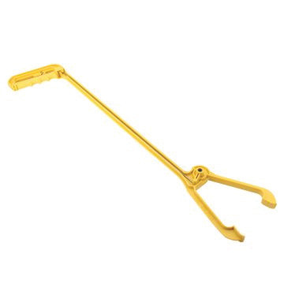
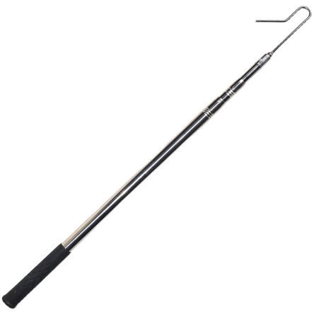
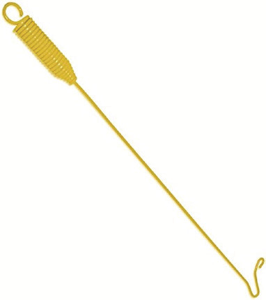

to be moved from one house to another, for example, from the growing house to the laying house where the laying house is different from the growing house. Figure 11.3 shows examples of poultry-catching tools.



Figure 11.3: Examples of poultry-catching tools
Activity 11.1
Under the guidance of your teacher, practise beak trimming in your school poultry unit.
Prepare poultry-catching tools by using locally available resources then practise catching and general handling of chickens in your school poultry unit.
Exercise 11.2
You are managing a chicken farm with pullets in the growing period. What are the key factors to consider in the management of pullets during this stage?
In a small poultry farm, the brooding house is also used for growing pullets. What are the advantages and disadvantages of this practice compared to transferring pullets to a separate grower house?
How can you determine the moisture content of the litter during the growing period, and why is it important for the health and performance of pullets?
What are the differences between chick starter and growers mash, and why is it important to change the feed gradually when transitioning pullets from one type of feed to another?
What are the factors to consider when designing housing for layer growers?
How can you assess the progress of pullets in weight gain during the growing period, and how does this information assist in making feeding decisions?
Why is it important to provide enough space and feeders for pullets during the growing period, and how does this affect their uniformity at maturity?